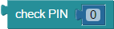
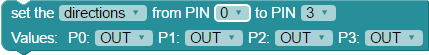
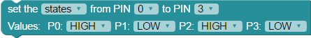

BlocklyProp reference for PIN STATES blocks


 For Activity Board, FLiP, and Other board types. Not available for Badge or Scribbler Robot board types. I/O pin availability will vary with board type.
For Activity Board, FLiP, and Other board types. Not available for Badge or Scribbler Robot board types. I/O pin availability will vary with board type.
make PIN
The make PIN block sets the function and state of a Propeller I/O pin.
Select a Propeller I/O pin, 0 to 27*.
- Dropdown variant (top): simply select the desired pin number
- Programmable variant (bottom): insert a number value block that evaluates to an I/O pin number in the range of 0-27.
Set the function and state with the second dropdown:
- High sets the pin to output +3.3V.
- Low connects the pin as an output to Ground.
- Toggle sets the pin to a high output if it was Low or to a Low output if it was High.
- Input sets the pin as an input (which allows the Propeller to read the high or low voltage applied to the pin, and block current from going in or coming out of the pin).
- Reverse sets the pin to an input if it was an output or sets the pin to an output if it was an input.
check PIN

The check PIN block reads an I/O pin as an input. It sets the specified pin to an input and returns a 1 if the pin selected is high and returns a 0 (zero) if the pin is low.
- Dropdown variant (top): simply select the desired pin number
- Programmable variant (bottom): insert a number value block that evaluates to an I/O pin number in the range of 0-27.
set multiple pins


The set multiple pins sets the state or direction of a continuous group of pins at the same time.
- From the first dropdown, select one of two options:
- direction will allow you to set each pin individually to input (IN) or output (OUT).
- state will allow you to set individual ouptput pins to HIGH (+3.3 V) or LOW (0 volts - ground).
- From the second and third dropdown menus choose a continuous I/O pin range, lower to higher. The maximum range for the Propeller Activity Board is 0-13.
- On the second row, a dropdown will appear for all I/O pins in the range; set state or direction independently for each one.
You must first set a pin's direction to output (OUT) with one block, before you set its state to HIGH or LOW with another block. Otherwise it won't work!
Binary get pins

The Binary get pins block reads the input states of a contiguous group of I/O pins. The state of each I/O pin becomes a bit in a binary number, with the highest I/O pin number providing the most significant bit.
You must first each pin's direction to input (0) with one block, before you attempt to read the input states with this block. Otherwise it won't work!
Binary set pins

The Binary set pins block sets the state or direction of a contiguous group of I/O pins. Each pin in the group is set by the corresponding bit in the attached binary value block.
- In the first dropdown menu, select one of two options:
- states - when states is chosen, a 0 bit sets a pin to output low, and a 1 sets a pin to output high.
- directions - when chosen, a 0 bit sets a pin to input, and 1 sets a pin to output.
- In the second dropdown, select the highest I/O pin number in a contiguous group of pins, and in the third dropdown, select the lowest I/O pin number. For example, P9 and P6 would make a contiguous group P9, P8, P7, P6.
- Attach a binary value block, and enter as many binary digits as there are I/O pins in the specified range. The left-most digit will set the highest numbered pin, and the right-most digit will set the lowest numbered pin. Optionally, you may use any block that provides a value, and the pins will be set to the binary equivalent of that value.
You must first set a pin's direction to output (1) with one block, before you set its state to HIGH or LOW with another block. Otherwise it won't work!